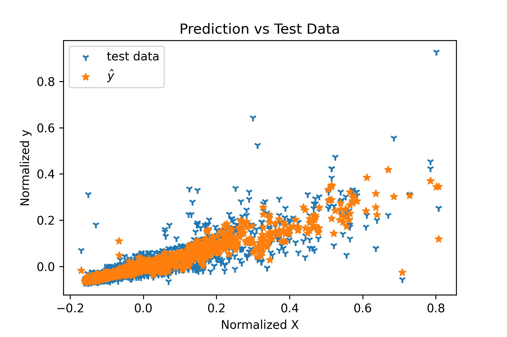

I am an engineering professional with +5 years of experience in the transportation industry.
My experience includes highway design,
and slope-stability analysis. I also have training in ground improvement techniques, traffic analysis, and modeling.
Recently, I finished my PhD in Civil Engineering at the University of Florida.
I am conducting my research in traffic operations. I am developing optimizations'
algorithms to exploit Connected and Automated Vehicles capabilities to improve traffic
performance in arterials with my former advisor Dr. Lily Elefteriadou.
My research is motivated by my extreme curiosity of evaluating the implementation of new technologies in the
transportation field, and the
desire of providing people with more freedom while commuting.
I like to focus on designing projects that tackle our diverse communities' problems
concentrating on innovation, safety, sustainability, and operation performance.
Here is my RESUME,
and CV.


Summary
I developed a scraper that extracts data from an advertisement website of real-state in Panama.
The data is then preprocessed to develop predictive machine learning models
(ANN, RF, Linear, and Polynomial regression). In the future,
I plan to incorporate data from different countries in the region and include network infrastructure data in the models.
I hope this project will help stakeholders to make more informed decisions or
to inform policymakers about the dynamic of the housing market in the region.
Tools
Python, NumPy, Matplotlib, Selenium, webdrivermanager, scikit-learn, TensorFlow.
Summary
I developed a data scrapper that gets authors' relationships from research journals. The relationship is a label
between the combination of authors on each paper. This allow to built social communities to identify researchers that investigate similar topics.
Then, this network is use to track history of different studies within each community. This tool helps with the literature review stage.
Tools
Python, NumPy, Matplotlib, Selenium, webdrivermanager .
Graduate Research Assistant
Summary
Currently, I am developing algorithms to optimize traffic performance in urban environment.
The conceptual framework is applicable for simulation tools as well as for real-world implementations.
Different types of optimization paradigms (LP, MINLP, INLP) are studied to
minimize travel time considering CAV capabilities. A comparison between an actuated
control and the proposed algorithms have confirmed the benefits of our strategy.
The improvements varies from [7-16%] in travel time reduction.
Tools
Python, CPLEX, NumPy, Matplotlib, VISSIM.

Summary
This project is on hold. During my short consultancy period in this project,
I provided visibility assessment for this project. I addition, I provided geometric design assessment,
and earthworks estimations for other projects in parallel.
The visibility and geometric design were modeled on AutoCAD Civil 3D.
Tools
AutoCAD Civil 3D, MS. Excel, Infraworks.

Summary
This research was conducted to fulfill the Master's degree requirement in Civil Engineering at KU.
This study seeked to assess driver behavior in a simulated Connected environment.
Lane-changing models were developed and implemented in a driving simulator.
Tools
SPSS, MiniSIM, Fixed Based Driving Simulator, R, eyetracking device.

Summary
The project consisted of a boulevard design type of two lanes per direction in moderate terrain over an alignment of 13KM.
Several alternatives were proposed to improve the mobility of the local communities including roundabouts, interchanges, etc.
The construction cost of the project was approximately $90 U.S Millions.
I served as the lead highway design engineer and actively participated in the coordination of the project.
Tools
AutoCAD Civil 3D.

Summary
As one of the most ambitious projects, I have worked on. This project considered the design and rehabilitation of around 153KM
of rural roads.
The project is located through mountainous terrain surrounding the oriental region of Bogota, Colombia.
This project considered several roundabouts, interchanges, bridges, and its construction cost was estimated to be around
$1.0 U.S Billions.
I served as the lead highway design engineer, and coordinate the design team. In addition,
I provided assitance to the surveying and
environmental assessment teams.
Tools
AutoCAD Civil 3D.

Summary
The line 1 of the Panama Metro included several changes in the geometry of local roads.
This was due to the construction of the piles that support the elevated sections of the metro.
After the piles were casted in place the departement of transportation proposed plans to improve mobility in the affected areas.
I had the opportunity of getting involved at this stage of the project. I provided several alternatives
to enhance the mobility and safety conditions for pedestrians.
Sidewalks designs were proposed to improve connectivity between pedestrians and the transit system
(metro and bus), while for the traffic,
U-turns were designed to alleviate congestion on nearby intersections.
Tools
AutoCAD Civil 3D.

Summary
This project was a widening from 2 to 4 lane-highway in a rural environment.
I had the opportunity of providing assistance to the geotechnical department by modeling and
analyzing several alternatives to ensure the stability of slopes and embankments.
Furthermore, I helped with the drainage works and anti-erosion plans.
I also had the opportunity on helping with some ground improvement technics such as MSE walls, gabions,
Finally, I helped to reduce the earthworks cost by adjusting the corridor design.
Tools
AutoCAD Civil 3D.

Summary
This project was also a widening project from 2 to 4 lanes highway. In this project,
I helped with the design of several roundabouts in urban enviroments.
Improvement on the sidewalks and bus-stops were provided.
Accessibility was carefully studied to provide access to motion-impaired riders and pedestrians.
In addition also helped with the creation of the DTM (Digital Terrain Model) of the project.
I also participate in the traffic signal assessment team by following the MUTCD and local agencies' normative.
Tools
AutoCAD Civil 3D.

Summary
This project, mainly geotechnical, required us to provide solutions to settlement on embankments
and slides on slopes.
We had to characterize the soil type,
the type of problem and provide several alternatives to solve the problem. Several methods such as gabions,
soil replacement, draining works, shotcrete, soil nailing, and reshaping were proposed.
My role on this project was more focused on the creation of virtual models. These models were run in the
Slide-RockScience software to evaluate the FS for the alternatives.
In addition, I had to create the 3D models for the final drawings.
Tools
AutoCAD Civil 3D, Slide-RockScience.
Summary
This was a feasibility study for one of the more ambitious hydroelectric projects in the country. Its execution is on hold.
However, I had the opportunity of providing the geometric design of the access roads to complete the project.
These roads were mountainous roads with grades around [6-14%] and above in some cases. The roads passed through the virgin jungle
and they were meant to remain after the finalization of the project providing accessibility to the project and indigenous
communities in the area. In addition to the geometric design, I also estimated the earthworks, and drainage works required to complete the project.
I also did a minor collaboration with the geotechnical team to evaluate alternatives to provide construction plans for the project.
Tools
AutoCAD Civil 3D.

Summary
This project was conceptualize for touristic purposes. Converting a boring road into pleasant walking/driving experience.
We added several mini-roundabouts to improve mobility for vehicles. We also added sight-scene places,
cycle paths, and enhanced the pedestrian path for recreation. Parks for children were also designed. My role on this project
was on developing the DTM of the project as well as
providing assistance to the traffic and geotechnical teams to provide design alternatives.
Tools
AutoCAD Civil 3D.
Summary
This project was the first big project I had the opportunity to work on. This ambitious project considers
a marine viaduct that surrounds the old town of Panama City. Several amenities such as skate parks, basketball,
and tennis courts were added for recreation. The boulevard also improved mobility in an already busy collector in the city.
This project also helped to promote accessibility to a slum area in the city promoting inclusion.
This project was awarded the best global project award by the
ENR in 2015.
My role on this project was to assist the geometric design, geotechnical, and traffic teams.
Tools
AutoCAD Civil 3D.